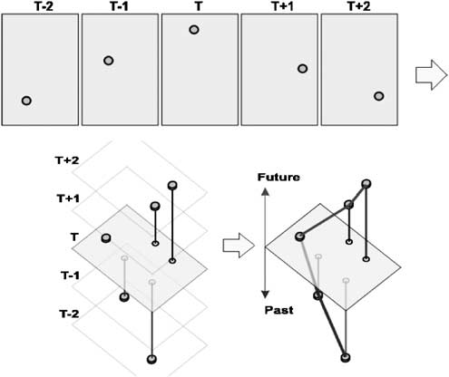
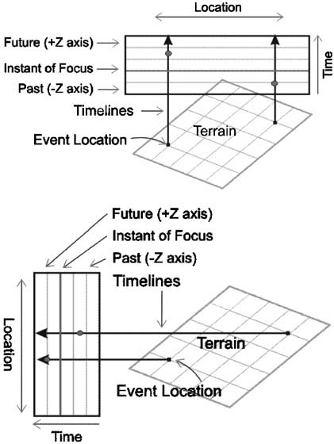
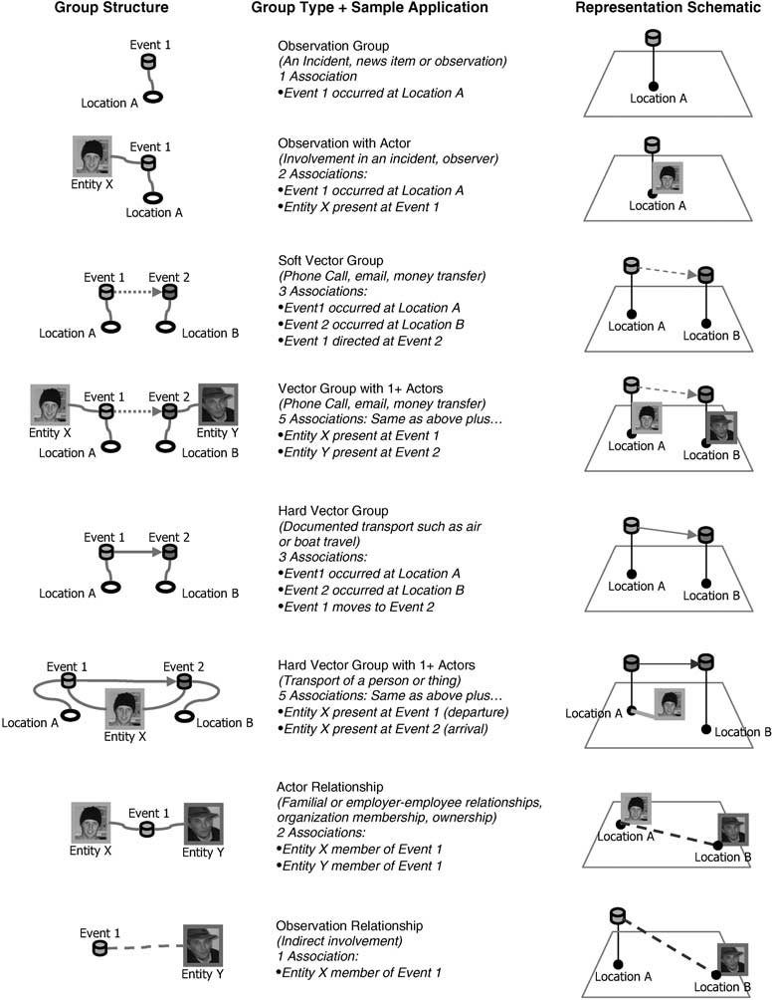
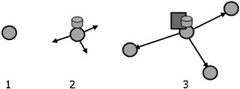
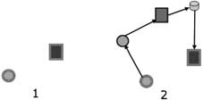
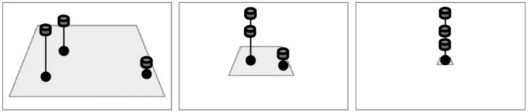
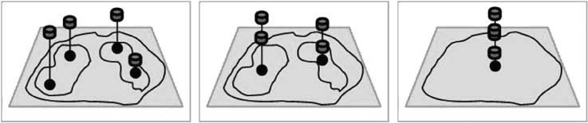

Abstract
Analyzing observations over time and geography is a common task, but typically requires multiple, separate tools. The objective of our research has been to develop a method to visualize, and work with, the spatial interconnectedness of information over time and geography within a single, highly interactive three-dimensional (3-D) view. A novel visualization technique for displaying and tracking events, objects and activities within a combined temporal and geospatial display has been developed. This technique has been implemented as a demonstrable prototype called GeoTime in order to determine potential utility. Capabilities include descriptive events and relationships, association analysis, event aggregation methods and geo-located linked charting. Initial evaluations have been with military users. However, we believe the concept is applicable to a variety of government and business analysis tasks.
Keywords:Spatiotemporal; geospatial; interactive visualization; visual data analysis; link analysis; 3-D information visualizationIntroduction
Information visualization benefits
Animated two- (2-D) and three-dimensional (3-D) computer graphics can be extremely expressive. With the correct approach to the visual design of the layout and the objects, large amounts of information can be quickly and easily comprehended by a human observer. Visualization is an external mental aid that enhances cognitive abilities.1 When information is presented visually, efficient innate human capabilities can be used to perceive and process data. Orders of magnitude more information can be seen and understood in a few minutes. Information visualization techniques amplify cognition by increasing human mental resources, reducing search times, improving recognition of patterns, increasing inference making and increasing monitoring scope. 1,2,31 These benefits translate into system- and task-related performance factors, for individuals and groups, which affect the completion of analysis, decision-making and communication tasks. The time, effort and number of work products required to do these types of tasks is reduced. 3
Visualization of events in time and geography
Many visualization techniques for analyzing complex event interactions only display information along a single dimension, typically one of time, geography or network connectivity. Each of these types of visualizations is common and well understood. For example, time-focused scheduling charts such as Lifelines 4 or Microsoft (MS) Project display attributes of events over the single dimension of time. A Geographic Information System (GIS) product, such as MS MapPoint, 5 or ESRI ArcView, 6 shows events in the single dimension of locations on a map. There are also link analysis tools, such as Netmap 7 or Visual Links 8 that display events as a network diagram or graph, of objects and connections between objects. Several systems exist for tracking highly connected information, most developed for police investigative purposes.9 Analyst Notebook 10 and Crime- Link, 11 for example, provide tools for organizing and arranging fragments of information into visualizations intended to help the analyst make sense of complex relationships. These tend to be one-dimensional representations that show either organizational structures, timelines, communication networks or locations. In each case, only a thin slice of a multidimensional picture is portrayed.
Some of these systems are capable of using animation to display time. Time is played back, or scrolled, and the related spatial or other displays change to reflect the state of information at a moment in time. However, this technique relies on limited human short-term memory to retain temporal changes and patterns. One technique, called 'tracks', is often used in air force and naval command and control systems to show on the map surface the trails of moving entities. Another visualization technique called 'small multiples' 12 uses repeated frames of a condition or chart, each capturing an incremental moment in time, much like looking at sequence of frames from a film laid side by side. Each image must be interpreted separately, and side-by-side comparisons made, to detect differences. This technique is expensive in terms of visual space since an image must be generated for each moment of interest, which can be problematic when trying to simultaneously display multiple images of adequate size that contain complex data content. One additional technique to mention is the use of linked views to support multivariate analysis, including time-series data analysis in one view, and a map in another view. 1,13 Interactive linking of data selection across multiple, separate views improves the small multiples technique.
Related work
Recent spatiotemporal research has been progressing in a variety of areas. For example, geographic knowledge discovery methods have been developed using analysis of logs of GPS position data over time. Point clouds and density surfaces in 3-D, with time as the vertical dimension, are used for data exploration. The goal is to develop agent-based computational mechanisms to support time- and location-based PDA services.14
Significant work is done in health data analysis, where spatiotemporal pattern analysis makes use of multiple maps and statistical graphing. Systems such as GeoVista make use of map animation, multivariate representations, and interactivity (e.g. highlighting, brushing, filtering and linked selection) to assist in the analysis of geo-referenced time varying multivariate data. However, maps and timelines are separate views.15–19
Research in the GIS community exploring 3-D visualization of activities in a combined time and geography space is in the early stages and first results include showing paths or track data but without interaction, animation or support of analytical user tasks.20 This work is related to a 3-D spatiotemporal concept21 discussed as a way to allow maps to encode time to the same degree that maps encode space. Time can extend above the map in the third dimension. Time does not need to be a 'hidden dimension'. One technique has been developed22 that uses spiral-shaped ribbons as timelines to show isolated sequences of events that have occurred at discrete locations on a geographical map. This technique is limited because it uses spiral timelines exclusively to show the periodic quality of certain types of events, but does not show connectivity between the temporal and spatial information of data objects at multilocations within the spatial domain. Further, event data objects placed on the solid, wide spirals can suffer from complete occlusion, thereby providing for only a limited number of events and locations viewable with the spiral timelines.
A recent review of geographic dynamics23,24 provides examples of 2-D or 3-D maps with playback and animation controls to discover spatiotemporal behaviors in, for example, the evolution of a weather system, the dispersion of pollutants or the propagation of a disease. Objects move across the surface of the map as they change position or shape in time. One classic example of physical 3-D spatiotemporal dynamics is the National Center for Supercomputing Applications' study of the evolution of a modeled thunderstorm.25,26
This paper on GeoTime information visualization builds on the description provided in an earlier publication 27 by adding discussions on event imagery, techniques for event aggregation and geo-located summary charts. More information is also provided with respect to the feedback and observations from the testing and evaluation done to date.
The GeoTime visualization concept
A visualization technique has been developed to improve perception of movements, events and relationships as they change over time within a spatial context. A combined temporal–spatial space was constructed in which to show interconnecting streams of events over a range of time in a single picture. Events are represented within an X, Y, T coordinate space, in which the X, Y plane shows geographic space and the Z-axis represents time into the future and past (see Figures 1 and 6A). In addition to providing the spatial context, the ground plane marks the instant of focus between before and after; events along the timeline 'occur' when they meet the surface. Events are arrayed in time along time tracks, which are located wherever events occur within the spatial plane.
Spatial time tracks
Spatial time tracks make possible the perception of where and when. They are the primary organizing elements that support the display of events in time and space within a single view. Time tracks represent a stream of time through a particular location and are represented as a literal line in space. Each unique location of interest will have one spatial timeline that passes through it. Events that occur at that location are arranged along this timeline according to the exact time or range of time at which the event occurred.
 Figure 1 Individual frames of movement are translated into a continuous spatiotemporal representation.A single spatial view will have as many timelines as necessary to show every event at every location within the current spatial and temporal scope. In order to make comparisons between events and sequences of events between locations, the time range represented by the timelines is synchronized. In other words, the time scale is the same for every timeline.
There are three variations of spatial timelines that emphasize spatial and temporal qualities to varying extents. Each variation is an increase of saliency of time over geography. These are 3-D Z-axis timelines, 3-D viewer facing timelines and linked time chart timelines. Each variation has a specific orientation and implementation in terms of its visual construction and behavior. The user may choose to enable any of the variations at any time during runtime.
3-D Z-axis timelines
3-D timelines are oriented normal to the terrain view plane and exist within its coordinate space as shown in Figure 6B. This method places more emphasis on the geographical view.
3-D viewer facing timelines
3-D viewer facing timelines are similar to 3-D timelines, except that they rotate about the instant of focus point so that they always remain perpendicular to the viewpoint from which the scene is rendered. This is shown in Figure 6C. The viewer facing timelines slightly increases the saliency of time over geography. In practice, users have preferred the 3-D Z-axis timelines described above, or the linked time chart view described next.
Linked time chart timelines
Linked time chart timelines are timelines that connect a 2-D grid in screen space to locations marked in the 3-D terrain representation. More emphasis is placed on the time view. The chart grid lines help improve the precision of comparison of event times. As shown in Figure 2, the timeline grid is rendered in screen space as an overlay in front of the 2-D or 3-D terrain.
Implementation
GeoTime has been built as a Java application and uses the Oculus-for-Java28 class library for rendering and animation. Screenshots of GeoTime are shown in Figure 6D and E.
Simple tables of application data are input with a csv file reader or an Excel drag'n drop input wizard. A Microsoft Access database is used to manage the application data. All three variations of spatial timelines have been implemented: 3-D Z-axis timelines, 3-D viewer facing timelines and linked time chart timelines.
Map data, including imagery and 3-D digital terrain elevation data, are accessed via an interface to ESRI ArcSDE/CJMTK (Commercial Joint Mapping Toolkit). 29
 Figure 2 Diagram showing how time chart timelines are connected to terrain locations.The GeoTime information model
An information model, based loosely on Davidsonian semantics,30 is used to support the representation of information in GeoTime. The following object types are employed in GeoTime:
Entities (people or things): represent any thing related to or involved in an event including people, objects, organizations, equipment, businesses, etc.
Locations (geospatial or conceptual): represent a place within a spatial context, such as a geospatial map, a node in a diagram such as a flowchart, or even a conceptual place such as 'OZ'.
Events (occurrences or discovered facts): represent any action that can be described. Events store the times at which the action took place. The following are examples of events:
- Bill was at Toms house at 1500 h.
- Tom phoned Bill on Thursday.
- A tree fell in the forest at 0413 h, June 3, 1993.
- Tom will move to Spain in the summer of 2004.
These basic information types are combined into groups using Associations. An association is an information object that describes a pairing between two objects. They are the links in Figure 3. For example, in order to show that a particular entity was present when an event occurred, an Association is created to represent that Entity X 'was present at' Event A. An association also exists to link Event A to a particular Location. In GeoTime, groups of associated elements have been defined to represent certain classes of occurrences and relationships. These groups have specific visual expressions and interactive behaviors in the display. Examples of defined groups are described in Figure 3. Extensions, new classes of associations and new types of groups are possible.
A variation of the association type is used to define a subclass of these groups to represent user hypotheses. In other words, groups can be created to represent a guess or hypothesis that an event occurred, that it occurred at a certain location or involved certain entities. Currently, the degree of belief/accuracy/evidence reliability is modeled on a simple 1-2-3 scale and represented graphically with line quality.
Information interaction within the spatiotemporal workspace
In order for GeoTime to move beyond a visualization concept to a usable prototype, several user interactions within the combined spatiotemporal viewer were necessary. In addition to familiar data interactions such as selection, filtering, hide/show and grouping that operate as commonly expected, the following interactions were specifically developed or customized to work within the GeoTime environment.
Temporal navigation
The Time and Range Slider, as shown in Figure 6F, is a linear time scale that is visible underneath the visualization representation. This control contains subcontrols/ selectors that allow control of three independent temporal parameters: the Instant of Focus, the Past Range of Time and the Future Range of Time. Past and future ranges can be independently set by the user by clicking and dragging on handles. The time range visible in the time scale of the time slider can be expanded or contracted to show a time span from centuries to seconds. Clicking and dragging on the time slider anywhere except the three selectors will allow the entire time scale to slide to translate in time to a point further in the future or past.
Continuous animation of events over time and geography is provided as the time slider is moved forward and backwards in time. If a vehicle moves from location A at t1 to location B at t2, it is shown moving continuously across the stationary map. The events, on the timelines, animate up and down at a high frame rate. The time scale in the scene moves as well.
Simultaneous spatial and temporal navigation
Common interactions such as zoom-box selection and saved views are provided. In addition, simultaneous spatial and temporal zooming has been implemented to allow the user to quickly move to a context of interest. In any view, the user may select a subset of events and zoom to them in both time and space using the Fit Time and Fit Space functions. Within the Overlay calendar views, these actions happen simultaneously by dragging a zoom-box on the time grid itself. The time range and the geographic extents of the selected events are used to set the bounds of the new view.
Association analysis
Functions have been developed that take advantage of the association-based connections between Events, Entities and Locations. These functions are used to find groups of connected objects during analysis. Associations connect these basic objects into complex groups (see Figure 3) representing actual occurrences. These associations can be followed from object to object to reveal connections that are not immediately apparent. Association analysis functions are especially useful in the analysis of large data sets where a quick and efficient method to find and/or filter connected groups is desirable. For example, an Entity may be involved in events in a dozen locations, and each of those events may involve other Entities, and so on. The association analysis function can be used to display only those locations on the visualization representation that the entity has visited or entities that have been contacted. Two simple association analysis functions have been implemented: Expanding Search and Connection Search.
 Figure 3 Example entity activity groups.  Figure 4 Expanding Search. Expanding Search As illustrated in Figure 4, the Expanding Search function allows the user to start with a selected object(s) and then incrementally show objects that are associated with it by increasing degrees of separation. The user selects an object or group of objects of focus and clicks on the Expanding Search button. This causes everything in the visualization representation to disappear except the selected items. The user then increments the search depth and objects connected by the specified depth are made visible in the display. In this way, sets of connected objects are revealed. Connection Search The Connection Search function allows the user to connect any two objects by their web of associations. The user selects any two objects and clicks on the Connection Search tool. The Connection Search algorithm scans the extents of the network of associations starting from one of the objects. The search will continue until the second object is found as one of the connected objects or until there are no more connected objects. If a path of associated objects between the target objects exists, all of the objects along that path are displayed and the depth is automatically displayed showing the minimum number of links between the objects. This is illustrated in Figure 5.Additional entity and event interactions
Icons and small images are used to describe entities such as people, organizations and objects. Icons are also used to describe activities. These can be standard or tailored icons.
As entities change location in time, animation is used to show their movement from one location to another. Simple linear interpolation is done between individual observations. An optional 'trail', which traces an entity in time and geography, can be displayed for one or more selected entities.
Some event timelines, for instance cultural or political, do not have a location. Other events have unknown locations. Non-geographic timelines are shown on the side of the map plane.
Mouse over drill down, as shown in Figure 6G, allows additional information to be displayed in context. Entities and events can be selected and grouped into associations. In this way, a user can organize observations into related stories or story fragments. These groupings can be named with a label and visibility controls allow them to be turned on and off.
Annotations in geography and time
Ink strokes can be placed on the map and used to annotate elements of interest with arrows, circles and freeform markings. Some examples are shown in Figure 6H. Ink objects are located in geography and time and so appear and disappear as geographic and time contexts are navigated.
Event imagery
Imagery can be used as part of the event description. Images can be viewed in all of the GeoTime contexts. Figure 7A and B show images in the time lines and the time chart views. With this method, differences over time can be seen in a sequence of images. Imagery can be events associated with people, traffic, buildings and other urban changes or rural and agricultural changes.
Event aggregation
Working with hundreds of events seems realistic in military operations. An Army Battalion, the 1 PPCLI, Microsoft Access database used in Afghanistan in 2002 recorded, in 3 weeks, 500 incidents of who-what-whenwhere on shootings, bombings, fires, mines, meetings, kidnaps, thefts, assaults, etc. However, subject matter experts discussed situations where understanding less than 100 events was important, as shown in Figure 7D, and situations where many thousands of events are involved.
When the number of events increases, techniques for aggregation become more important. Many individual locations and events need to be combined into a single summary. Such summaries of thousands of individual events and locations help make trends in time and space more visible and comparable. Several techniques have been implemented to support aggregation. Examples are shown in Figure 7C and E.
User-defined nested locations
Aggregation based on level of detail (LOD) is commonly used in mapping geographical features at various scales. On a 1:25,000 map, for example, individual buildings may be shown, but a 1:500,000 map may show just a point for an entire city. GeoTime supports LOD aggregation of events based on hierarchy, scale and geographic region. GeoTime also allows the user to adjust LOD behavior to suit their particular analytical task. There are three components underlying GeoTime aggregation:
- Hierarchy of locations: Figure 8 shows aggregation of events by proximity based on map scale. An organization of superior and subordinate locations must exist to allow the GeoTime aggregation method to roll up events. A gazetteer is commonly used to help define such a structure. Within GeoTime, a hierarchy of locations is implemented using associations to define parent–child relationships between locations.
- User-defined geo-regions: The hierarchy may be defined explicitly based on inclusion within a geographic boundary as shown in Figure 9. The user can define an arbitrary region using GeoTime's built-in drawing tools and then aggregate the events in that region into a representative location. In GeoTime this is accomplished by associating a polygon outline with a location.
- Automatic LOD level selection: The level of aggregation can be explicitly set by the user or it can be done automatically based on the view scale. If the automatic mode is selected, events will be re-aggregated as the user navigates the scene. This may not always be desirable since it significantly changes the event display which potentially makes interpretation challenging.
Geo-located summary charts for time tracks
Depending on the user's task, it can be useful to see summary charts of events for a geographic point or area. GeoTime provides geo-located summary charts of events for each time track. Charts may be configured to aggregate by time, type of event, and other data attributes or computed dimensions.
A single chart of totals for all locations is located in the side panel for reference and allows for rapid filtering and chart adjustments. Figure 7E shows a screenshot of geolocated charts and the summary side panel chart. Categories of events can be added or removed from all geo-located charts by adding or removing them in the single total chart.
 Figure 5 Connection Search.Charts are also affected by temporal navigation and operate in one of the three modes:
- All data in the system appears in the charts.
- All data within the current temporal range appears in the charts. (The user sets a time range over which to chart using the time slider range control shown in Figure 6F.)
- Only data that is in the current geospatial and temporal range appears in charts.
Aggregation hierarchies
Some progress has been made with events belonging to multiple concurrent sets, but more work is required. Currently, event aggregation does not need to be according to a strict hierarchy. An event can have multiple parents and so belong to more than one set. However, in the display, events are shown as belonging to only one timeline and one chart at a time. For instance, with two intersecting routes, the events at the intersection will belong to both route aggregations but are only shown in one aggregation if both routes are displayed. If only one route is displayed, and it can be either route, the events at the intersection are included in that route. This approach has been taken to enable using an inked area as a filter with an associated defined area of interest. So an analyst can say, show me all the things that have happened in this (arbitrarily) defined area.Applications of GeoTime
Tracking and analyzing entities and streams of events has traditionally been the domain of investigators, whether that be police services or military intelligence. In addition, business users also analyze events in time and location to better understand phenomenon such as customer behavior or transportation patterns. GeoTime applications are possible in both reporting and analysis.Visual history for the 'information consumer'
The GeoTime display, as shown in Figure 7F, can be used to get an instant view of activity at any time/space coordinate. Standard activity reports from other systems can be imported and translated into GeoTime elements. Over the course of weeks or months, hundreds to thousands of events from such automated systems could be stored and reviewed with a system such as GeoTime.Criminal analysis by the 'information producer'
An investigator, such as a police officer, could use GeoTime to review an interactive log of events gathered during the course of long-term investigations. Existing reports and query results are combined with user input data, assertions and hypotheses, as shown in Figure 7D. The investigator can replay events and understand relationships between multiple suspects, movements and the events. Patterns of travel, communications and other types of events can be understood. Repetition, regularity, bursts or pauses in activity are easily apparent.Evaluation and conclusions
Subjective evaluations and operator trials with four subject matter experts have been conducted. These initial evaluations of GeoTime were run against databases of simulated battlefield events and analyst training scenarios, with many hundreds of events. These informal evaluations show that the following types of information can be quickly revealed and understood:- What significant events happened in this area in the last X days?
- Who was involved?
- What is the history of this person?
- How are they connected with other people?
- Where are the activity hot spots?
- Has this type of event occurred here or elsewhere in the last Y period of time?
- Preparation for patrolling involved researching issues including who, where and what. The history of local belligerent commanders and incidents needs to be reviewed. It is difficult to do this with current tools.
- Tracking and being aware of history is important. For example, a ceasefire was organized around a religious calendar event. The event presented an opportunity and knowing about the event made it possible.
- In one campaign, the head of civil affairs had been there 20 months and had detailed appreciation of the history and relationships.
- You need to keep track of trends. What happened here? What keeps happening here? There are patterns. Belligerents keep trying the same thing with new rotations (a rotation is typically 6–12 months tour of duty). When the attack came, it did come from the area where many previous earlier attacks had also originated.
- The discovery of emergent trendsypersistent patterns y sooner rather than later would be useful. For example, the XXX Colonel that tends to show up in an area the day before something happens.
- Every rotation a valuable knowledge base is created, and every rotation, it is lost. We need to make better use of the knowledge base. It is a valuable historical record. The lack of a historical record contributes to loss of life.
- Not using the historical record of events, factions, populations, culture, etc. is information that is lost. The same mistakes are made over and over.
 Figure 8 Aggregation by proximity based on map scale.
 Figure 9 Aggregation by defined regions. Level of aggregation set by user.
During the informal evaluations, some GeoTime shortcomings were also noted. When many hundreds of events are on the screen at once, one key issue that became apparent was the need for seeing through the dense display of objects and labels. New aggregation/ de-aggregation methods were identified as being needed. This feedback resulted in the capabilities described in Section 6 – Event Aggregation. In addition, new label management techniques can be imagined and investigated to assist with displaying a higher density of events.
The evaluations revealed the need to deal with varying event precision in time and geography. For example, an event occurred sometime before the Xth year vs occurring at an exact date and time. For locations, an event may only be known to have occurred in a country vs a particular address in a particular city. Coordinates in time and space can be vague. GeoTime visualization techniques need to be extended to deal with issues of varying precision as well as related issues such as levels of accuracy and reliability.
With respect to GeoTime scalability, observations from the evaluations suggest that if it were possible to work with many thousands of events, users would do so. One test evaluation data set consisted of about 1,200 events. With the aggregation and exploratory interaction techniques, event patterns were discovered and were able to be compared over different time periods. Another test data set, with more than 2000 events, caused some system slowdown in acceptable interaction speeds. This has resulted in some recent re-factoring of the implementation to improve performance.
Additional GeoTime evaluations are planned in the next year, including technology exploration exercises with subject matter experts, as well as more formal task impact and evaluation experiments. A combination of direct observation, user questionnaires, task metrics and GeoTime instrumentation will be used to help understand specific visualization and interaction strengths and weaknesses. Differences in task performance between GeoTime and existing tools will be compared. One useful follow-on task would be to prepare case study reports that provide examples of GeoTime analysis to illustrate strengths and weaknesses. One case study example used during development and training exercises consists of a biographical personal history. Several other case studies have been done and reporting these would help show the range and nature of analysis tasks that can be performed with GeoTime.
The GeoTime prototype demonstrates that a combined spatial and temporal display is possible, and can be an effective technique when applied to analysis of complex past and future events within a geographic context. Ongoing research will include further experimentation to assess, explore and develop the full potential of the GeoTime visualization tool.